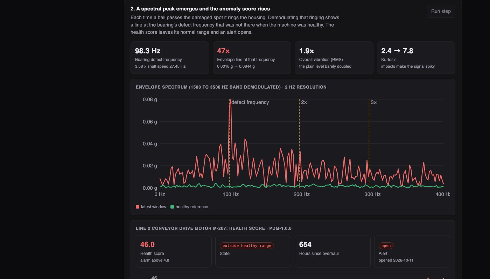
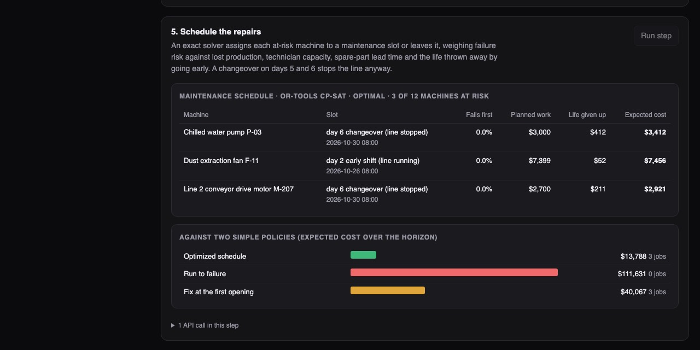

Python · Signal processing and predictive ML · 2026-10
How Many Hours Does This Bearing Have Left?
Condition monitoring for machines: listen to vibration, notice when a machine leaves its healthy range, predict how long it has left, and schedule the repair for when the line is stopped anyway. On simulated machines it predicted remaining life to within 23 hours on average, and its repair schedule cost $13,788 where running to failure would cost $111,631.

Built from a written blueprint as one vertical slice. The machines are simulated: vibration is generated by a script with four planted kinds of wear, so the results show that the methods recover planted patterns, not how they would do on real equipment. The simulated faults leave much cleaner fingerprints than real ones, which is why the fault-type classifier scores 100% here. No real data (such as NASA's turbofan set) is used. Not built: an edge agent, a time-series store, retraining from technician feedback, Kafka, Terraform, single sign-on.
01 — The problem
Most factories find out a bearing is failing when a threshold alarm goes off, or when the line stops. By then the choice is an emergency stop now or a gamble. A worn bearing does announce itself weeks earlier, but quietly: a faint regular clicking buried under the normal hum of the machine. Can software hear that early, say how many hours are left with an honest margin of error, and pick the cheapest moment to fix it?
Blueprint 6 of ten in an enterprise build book, built as the demo scenario end to end.
02 — What I built
A Python service on PostgreSQL with a background worker and a web page, started by one docker compose up.
- A machine simulator: half-second vibration recordings for motors, fans and pumps as they wear out in one of four ways.
- Signal processing: each recording becomes 14 numbers, including the strength of the tone a damaged bearing produces.
- Three models: is this machine outside its own healthy range, which kind of fault is it, and how many hours remain (as a low, middle and high estimate).
- A scheduler: an exact solver that weighs failure risk against lost production, technician capacity and part delivery times.
- Work orders: what the technician finds is stored as a label for future training.
03 — How it was built
- 01
Hear the click under the hum
Each time a ball rolls over a damaged spot it taps the housing, which rings like a tiny bell at about 2,400 Hz. The taps are too faint to raise the overall vibration much. So the recording is filtered to the ringing band, the outline of that ringing is traced (its envelope), and the envelope is searched for a regular beat. For the demo motor that beat, at 98.3 Hz, grew 47-fold while the overall level did not even double.
X[(freq < band[0]) | (freq > band[1])] = 0 env = np.abs(hilbert(np.fft.irfft(X, N))) return spectrum(env) - 02
Compare each machine with itself
A big fan shakes more than a small pump, and one sensor may read higher than another. So every indicator is divided by the machine's own average from its first ten recordings after installation or repair. A test feeds the same machine through a sensor reading seven times too high and checks the model inputs are identical.
base = np.median(f[:BASE_N, KEY], axis=0) rel = np.log(f[:, KEY] / base) - 03
The first detector failed, and why
The blueprint suggested an isolation forest to spot abnormal machines. It missed 12 of 30 failing machines. That method scores a reading by how easily it can be separated from the rest, and a reading far outside the normal range is separated about as easily as one just outside. The score stops growing, so a badly worn machine looked no worse than an odd healthy reading. A plain distance from the healthy range keeps growing with wear: it caught all 30, a median 773 hours before failure.
return np.sqrt(np.einsum("ij,jk,ik->i", d, stat["icov"], d)) # distance from the healthy cloud - 04
A range you can trust, not just a number
Three models predict the hours left: a low, a middle and a high estimate, meant to contain the truth 80% of the time. Straight from training they contained it 75.5% of the time on machines they had not seen. A calibration step measures that shortfall on a separate group of machines and widens the range by 5 hours each side, after which it held 80.7%.
conf = np.quantile(np.maximum(lo - yc, yc - hi), 0.8 * (1 + 1 / len(lo))) - 05
Fix it when the line is stopped anyway
The hours-left range becomes a chance of failing before any given day. The scheduler then prices every option for every machine: fail first (very expensive), repair during production (lost output), repair during a planned stop (cheap), or go early and throw away good bearing life. It put the motor and a pump into a planned changeover on day 6, and sent a fan that could not wait to day 2.
p * unplanned + (1 - p) * (planned + wasted)
04 — Results
The demo motor. After 20 simulated days its health score was 46 against an alarm level of 4.8. Predicted life left: 268 hours (range 230 to 391); the simulator's true value was 240. Left alone it had an 86% chance of failing within two weeks, an expected loss of $67,029, against $2,700 for a planned repair. After the repair the score returned to 1.9, and the technician's finding (outer-race damage, as the model said) was stored as a label.

Against simple approaches (30 machines held out from training):
| Question | This build | Simple approach |
|---|---|---|
| Hours-left error, final 300 h | 23 h | 181 h |
| Warning before failure | 773 h | 535 h |
| Cost of the demo plan | $13,788 | $40,067 |
The simple approaches: fleet average life minus the machine's age; an alarm on overall vibration level set to the same false-alarm rate; and repairing every alarming machine at the first free slot.
Speed. One recording becomes features in about a quarter of a millisecond; 20 plant-days for 12 machines (960 recordings, 3.9 million samples) are generated, stored and scored in about 3 seconds.
Checks. 22 tests: the spectrum finds a known tone at the right height, each fault type moves its own indicator most, a recording of the wrong length or full of invalid numbers is refused, the scheduler waits for the planned stop when risk allows and goes early when it does not, old raw recordings are dropped while their features stay, and one customer cannot see another's plant.
05 — What I'd do next
- Real run-to-failure data, where faults overlap and the fault-type score will fall.
- Retrain from technician labels, including the false alarms.
- Score new recordings incrementally instead of re-reading a machine's whole history.